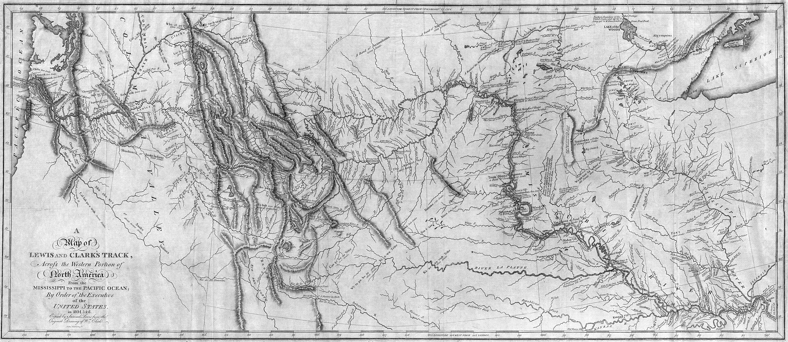

Directions: Read the two records and the background note, then answer the questions.
Background. President Jefferson's written instructions to Captain Meriwether Lewis are dated June 20, 1803, ten days before the Louisiana Purchase treaty reached Washington. The expedition they ordered left its camp near St. Louis on May 14, 1804. The first record is the president's orders. The second is the first day's entry in the journal those orders required the captains to keep.
"The object of your mission is to explore the Missouri river, & such principal stream of it as by it's course and communication with the waters of the Pacific ocean whether the Columbia, Oregon, Colorado or any other river may offer the most direct & practicable water communication across this continent for the purposes of commerce. ... In all your intercourse with the natives, treat them in the most friendly & conciliatory manner which their own conduct will admit; allay all jealousies as to the object of your journey, satisfy them of it's innocence, make them acquainted with the position, extent character, peaceable & commercial dispositions of the US. ..."
Source: Thomas Jefferson to Meriwether Lewis, June 20, 1803, as transcribed and edited by Gerard W. Gawalt, Manuscript Division, Library of Congress. Spelling follows the transcription. Cuts are marked with ellipses.
"May the 14th-Monday Set out from Camp River a Dubois at 4 oClock P.M. and proceded up the Missouris under Sail to the first Island in the Missouri and Camped on the upper point opposit a Creek on the South Side below a ledge of limestone rock Called Colewater, made 41/2 miles, the Party Consisted of 2, Self one frenchman and 22 Men in the Boat of 20 ores, 1 Serjt. & 7 french in a large Perogue, a Corp and 6 Soldiers in a large Perogue. a Cloudy rainey day. wind from the N E. men in high Spirits"
Source: William Clark, journal entry of May 14, 1804, as carried in the audited TPSP bank record (Journals of Lewis and Clark, Project Gutenberg). Spelling follows the record. The passage is the entry's first part, printed entire.

1. State the object of the mission in Jefferson's own terms, naming the river to be explored, the four rivers he names as possible Pacific connections, and the purpose the communication was to serve.
2. Jefferson orders Lewis to satisfy the Native nations of the journey's innocence while treating them in the most friendly and conciliatory manner. Using the lesson's record, explain in two sentences why a party of some forty armed men traveling up other peoples' river needed those orders, naming the meeting on the lower river that proved the need.
3. Rebuild the first day from Clark's entry: the hour of departure, the distance made, the weather, and the makeup of the three vessels, with numbers.
4. A student writes that the expedition found an empty West and opened it. Test the claim against this lesson's record. Name two dated facts that the claim leaves out, one about the country the corps traveled through and one about a person who crossed it, and state what each one shows.
1. The object of the mission. To explore the Missouri River and such principal stream of it as, by its course and communication with the waters of the Pacific Ocean, whether the Columbia, Oregon, Colorado, or any other river, might offer the most direct and practicable water communication across the continent, for the purposes of commerce. (Blueprint 7)
2. Why the orders were needed. The corps was an armed Army party ascending a river held by sovereign Native nations whose towns, trade, and permission it would need at every stage, beginning with food and winter housing. The confrontation with the Teton Sioux on the lower river, which stopped at the edge of violence, proved the need in the journey's first season: passage was negotiated with the peoples who held the river, and Jefferson's orders for friendly and conciliatory treatment, and for satisfying the nations of the journey's innocence, were the expedition's working method, not decoration. (Blueprint 8)
3. The first day rebuilt. The party set out from Camp River Dubois at 4 o'clock in the afternoon of Monday, May 14, 1804, proceeded under sail to the first island in the Missouri, and camped on its upper point, having made four and a half miles on a cloudy, rainy day with wind from the northeast, the men in high spirits. The vessels: the boat of twenty oars, carrying Clark, one Frenchman, and 22 men; one large pirogue with a sergeant and 7 Frenchmen; and a second large pirogue with a corporal and 6 soldiers. (Blueprint 7)
4. Test the claim of an empty West. Any two dated facts, accurately used, one of each kind. About the country: the corps wintered in 1804 and 1805 beside Mandan and Hidatsa towns larger than St. Louis and survived on their hospitality; or in August 1805 it obtained its mountain crossing from the Shoshone, whose chief Cameahwait held the horses; or the Treaty of Greenville of 1795 had already ceded most of Ohio a decade before the corps set out. About a person: Sacagawea, a Shoshone woman taken captive by the Hidatsa as a girl, interpreted for the corps and recognized her brother at the August 1805 council; or York, enslaved by Clark, crossed the continent, voted in the November 1805 poll on the winter camp, asked for his freedom on the return, and was refused for years. An empty country has no towns to winter beside, no horses to buy, no interpreters to hire, and no one's freedom to refuse. (Blueprint 8)
Teacher note. This check is formative. Question 2 is the one to read closely: a student who treats the friendly and conciliatory order as a courtesy has missed that the expedition's survival was negotiated daily, and the Teton meeting is the first dated proof. Question 4 separates students who can test an opening claim against the record from students who repeat the expedition's own framing of the country it crossed.